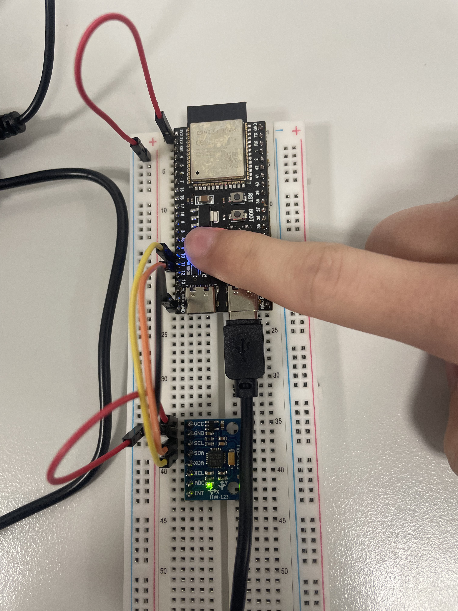

Real-time AI on a microcontroller
An ESP32-S3 with an MPU-6050 sensor recognizes four states and shows them on its LED. Everything runs on the board; the computer is only used for recording, training and flashing.
Group: Kristof Krupa, Sebastian Černý
Monitoring page (BLE): krecoe.github.io/MPA-PRM_Real-time_microcontroller/monitor/ (Chrome or Edge, not iPhone)
Code: github.com/Krecoe/MPA-PRM_Real-time_microcontroller
States
| LED | State |
|---|---|
| green | calm breathing (sensor on the chest) |
| red | fast breathing (sensor on the chest) |
| blue | not attached (held in the hand or lying) |
| magenta | shaking |
Wiring

| MPU-6050 (HW-123) | ESP32-S3 |
|---|---|
| VCC | 3.3 V |
| GND | GND |
| SDA | GPIO10 |
| SCL | GPIO11 |
The board is powered by USB-C. The LED is the on-board RGB LED (GPIO48).
Build and flash
You need Python 3.13 and the board connected by USB-C (on our PC it is COM7).
python -m venv .venv
.venv/Scripts/python -m pip install -r requirements.txt # includes PlatformIO
cd firmware
../.venv/Scripts/pio device list # find your COM port, put it in platformio.ini
../.venv/Scripts/pio run -t upload # build and flash (first time: about 9 minutes)Check that it works:
- The LED is dim white for 8 s, then shows the state.
- If the LED blinks red, the sensor is not found: check SDA (GPIO10), SCL (GPIO11) and 3.3 V.
- Board web page: join the Wi-Fi
ESP32-BREATH(no password) and open http://192.168.4.1/. - BLE monitor: open the monitoring page and click Connect board, then pick
ESP32-BREATH.
Data
The board sends its raw data over USB while recording. One command records one 60 s session:
.venv/Scripts/python record.py calm 60 sitting # label, seconds, variantThe file is saved as data/calm_sitting_<time>.csv. Data files are not in the repository.
All data were recorded by Kristof. We recorded 18 sessions of 60 s:
| Label | Sessions | State on the board |
|---|---|---|
| calm | 3 (sitting ×2, standing) | calm |
| fast | 3 (sitting ×2, standing) | fast |
| movement | 5 (flat, vertical, mixed, smooth, fast walking) | not attached |
| still | 2 (on the table, two sides) | not attached |
| shaking | 5 (flat, vertical, mixed, gentle ×2) | shaking |
Features and training
From each 8 s window (a new window every 1 s) we compute 6 features in features.py.
The board computes the same ones in firmware/src/main.cpp.
- How much the board moves in total
- How much it moved in the last 2 s
- How much of that movement is fast (above 3 Hz) — this catches shaking
- How much of the movement is in the breathing range (0.125–1.5 Hz)
- The breathing rate (breaths per minute)
- How fast the board rotates
None of them depends on how the board is turned. Our first model used per-axis features and mistook tilting the board in the hand for shaking.
.venv/Scripts/python train.py- The test is honest: each session is left out once, the model is trained on the others and tested on the one left out.
- Baseline: logistic regression. Final model: a small neural network with 16 neurons.
- On the board, the probabilities of the last 3 s are averaged and the most likely state is shown.
train.pysaves the model tofirmware/include/model.h; then flash the board again.check_board.pyconfirms the board gives the same results as Python.
Results
All numbers were measured. Accuracy is on sessions the model did not see during training.
| Model | Accuracy |
|---|---|
| logistic regression (baseline) | 77.5 % |
| random forest | 86.8 % |
| small neural network (used on the board) | 88.4 % |
Confusion matrix of the neural network (rows = true state, columns = predicted, counts of 8 s windows):
| calm | fast | not attached | shaking | correct | |
|---|---|---|---|---|---|
| calm | 140 | 16 | 3 | 0 | 88 % |
| fast | 12 | 136 | 11 | 0 | 86 % |
| not attached | 10 | 19 | 329 | 13 | 89 % |
| shaking | 0 | 3 | 24 | 238 | 90 % |
Most mistakes are calm vs. fast. The hardest sessions were slow smooth movement, gentle shaking and breathing while standing; we have only one session of each.
| On the board | |
|---|---|
| Time per decision | 43 ms |
| Board vs. Python on the same data | same result (probabilities differ by at most 0.006) |
| Time to switch movement ↔ shaking | about 5 s (seen live) |
| Flash / RAM used | 41 % / 23 % |
Live demo: all parts worked: the four LED states, the board's web page and the BLE monitor.
Own extension: air mouse
A separate firmware in air_mouse/ turns the board into a Bluetooth mouse (standard BLE HID,
no software needed on the computer). Everything runs on the ESP32-S3; USB only powers it.
- Tilt the breadboard to move the pointer: more tilt = faster, like a joystick. Tilt below about 5° is ignored.
- Tap the board with a finger for a left click: a tap is a short spike far from the low-pass filtered acceleration (above 0.6 g).
- The pose held still for the first second after reset is taken as "level".
cd air_mouse
../.venv/Scripts/pio run -t upload # replaces the classifier; run the same in firmware/ to go backThen pair ESP32-AirMouse in the computer's Bluetooth settings. Details, LED colours and tuning: air_mouse/README.md.
AI tools
We used Claude Code (Anthropic).
| Who | What the AI did |
|---|---|
| Kristof | wrote the board code, the Python scripts (record.py, features.py, train.py, check_board.py), flashed the board, ran the training, wrote the air mouse firmware (air_mouse/), wrote the documentation |
| Sebastian | wrote the BLE monitoring page (monitor/) and the BLE description (docs/BLE_PROTOCOL.md) |
What we did ourselves:
- wired the board and recorded all the data
- decided the main choices (Arduino + PlatformIO, 50 Hz, which data to add, open Wi-Fi)
- tested everything live: LED, web page, BLE monitor
All numbers in the documentation come from running the code on our data and our board. Every group member can explain the code.